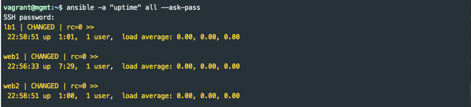
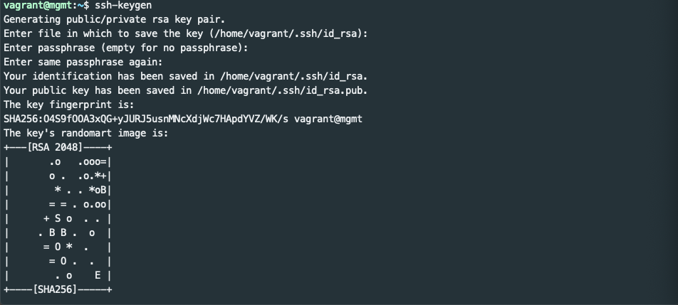

SSH Keys⌁
In the previous session, it was necessary to first SSH to the target node, accept its fingerprint, and interactively enter a password before executing the first Ansible command. This is OK for one or two nodes but would be painful when scaling to tens, hundreds, or thousands of nodes. SSH provides the ssh-keyscan tool and key based authentication to solve these issues.
ssh-keyscan⌁
ssh-keyscan is a utility for gathering the public SSH host keys of a number of hosts. It can be used to append entries for each of the lab hosts to the management node's ~/.ssh/known_hosts file as follows:
$ ssh-keyscan lb1 web1 web2 >> ~/.ssh/known_hosts
ssh-keyscan will print a couple lines of output for each node that it scans. It also adds entries to the known_hosts file. If you are curious, you can run cat ~/.ssh/known_hosts to see the current contents.
Now try to execute another ad hoc command to test the host keys for each node in the lab:
$ ansible -a "uptime" all --ask-pass
You'll see the following: 
Ansible connected to each node via SSH without requiring manually accepting each node's host key. It then ran the uptime command on each node to show load averages.
Key based authentication⌁
SSH can provide password-less logins by using a public/private key pair. The details of key based authentication are outside the scope of this tutorial, but the steps below can be followed to setup basic key based auth.
Generate an SSH key pair⌁
The ssh-keygen command can generate a key pair used for SSH authentication. Your own computer may already have a key pair, but the lab mgmt node needs one created as follows:
$ ssh-keygen
Accept the default location for the key. It isn't best practice to have an empty passphrase, but leave it empty for this lab. After hitting enter a couple times you should see that a key pair is created followed by an ascii art representation of it like this:

ssh-copy-id⌁
You are ready to copy your key to the server. The ssh-copy-id utility makes this easy.
$ ssh-copy-id vagrant@web1
Enter the vagrant user's password (vagrant) when prompted.
When the key copy is complete it will suggest you try logging in again as follows: ssh 'vagrant@web1'. This should connect you to a vagrant@web1:~$ prompt without having to type in a password. Use the exit command to return to the mgmt node.
This is a nice overview of ssh-copy-id and password-less logins.
Hello Ansible (Again!)⌁
Now that password-less login is setup on web1 it is time to try another "Hello World":
$ ansible -a "echo 'Hello Ansible (Again)'" web1
Notice that --ask-pass was not needed.
Next: Automating Key Distribution⌁
Using ssh-copy-id for every node in a large environment is a lot of manual work just to get an automation tool working. Fortunately, Ansible has a module to manage ssh keys. The first section of Lab 1 explains how to use Ansible's authorized_key module.